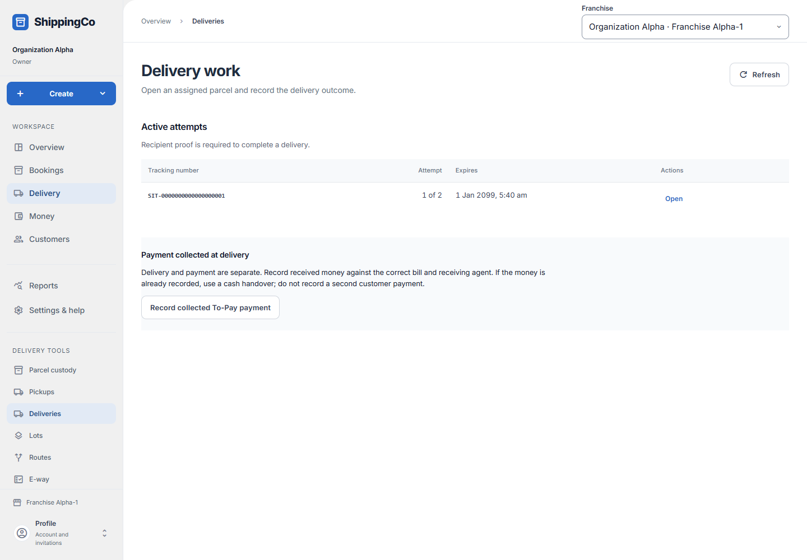
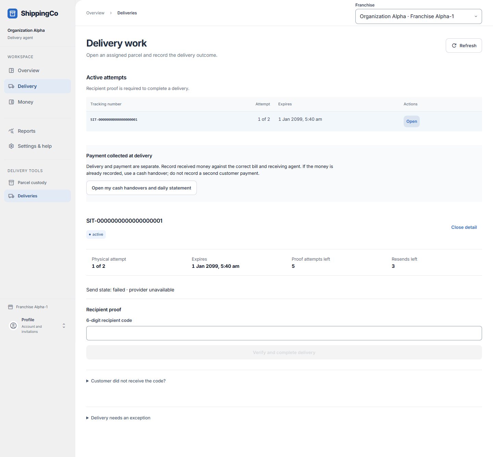

Delivery work
Complete delivery using the recipient’s proof.

Before you start
A dispatcher must start the delivery attempt from the parcel screen. The assigned delivery agent handles the delivery.
Complete the active attempt with the recipient
- Open Delivery, then Deliveries. Open the correct active assignment. Check the tracking number, physical attempt number, code expiry, Proof attempts left and Resends left.
- The assigned agent asks the recipient for the code they received, enters exactly six digits in 6-digit recipient code, and selects Verify and complete delivery. Staff cannot reveal the code from this screen.
- If proof is rejected, read the remaining-attempt count and recheck with the recipient. Do not guess codes. Completion is confirmed only after the saved result succeeds.
- Expand Customer did not receive the code? for recovery. Resend same code is available only after the displayed cooldown and while resends remain. It neither extends expiry nor resets proof attempts.
- If the challenge expired and the action is offered, Replace expired challenge requests a replacement. Recheck the current state before asking the recipient to verify.
- Expand Delivery needs an exception only for a genuine exception with the recipient present. Choose recipient channel unavailable, provider unavailable, or challenge locked reviewed. Supply the real Protected evidence ID and Request independent approval.
- An authorized independent reviewer checks the request and uses Approve exceptional proof where offered. The agent completes using Complete with approved exception only after approval is recorded. Requesting approval alone does not complete delivery.
- Close detail returns to the list. Refresh checks current assignments. If the assignment no longer appears, review the current branch and saved parcel state rather than creating another delivery attempt.
Quick steps
- Open Delivery work and select Open beside the assigned parcel.
- At delivery, enter the recipient’s six-digit code and select Verify and complete delivery.
- If needed, use Resend same code when the timer allows it. Use Replace expired challenge only when offered.
- If normal proof cannot be used, choose the true Exceptional reason and provide the protected evidence ID. Request independent approval.
- After approval, use Complete with approved exception. Record any collected payment separately against the correct bill.
Fields on this screen
- 6-digit recipient code: Required for normal completion. Use the code supplied by the recipient at delivery.
- Exceptional reason: Recipient channel unavailable, provider unavailable, or challenge locked reviewed. Choose the real reason.
- Protected evidence ID (UUID): Required for an exception request. Use the saved protected proof record.
What happens next
Successful proof completes the delivery. A request for an exception is not completion. A separate authorized person must approve it first.
If you get stuck
- No active deliveries: check your assignment and selected branch.
- Code rejected: read remaining attempts. Do not guess codes.
- Resending does not reset proof attempts or extend expiry.
- The current app shows at most two physical attempts. A dispatcher starts the second attempt from the parcel.
- Payment and delivery are separate. If a customer payment was already recorded, use a cash handover rather than record it again.
Assigned agent: recipient proof screen

- Check Send state before asking the recipient for a code. Failed · provider unavailable means the app has not confirmed a successful send. An active challenge by itself does not prove that a message reached the recipient.
- Use the offered resend or exception workflow only under its rules. Never make up a code or mark a parcel delivered simply because a provider is unavailable.
- Delivery proof and payment are separate. Open my cash handovers and daily statement takes the agent to money records. Do not record a second customer payment when handing over money already recorded.
About this guide
Checked against the current app source on 1 November 2026. Buttons depend on your access and the current record. This guide does not give extra access.